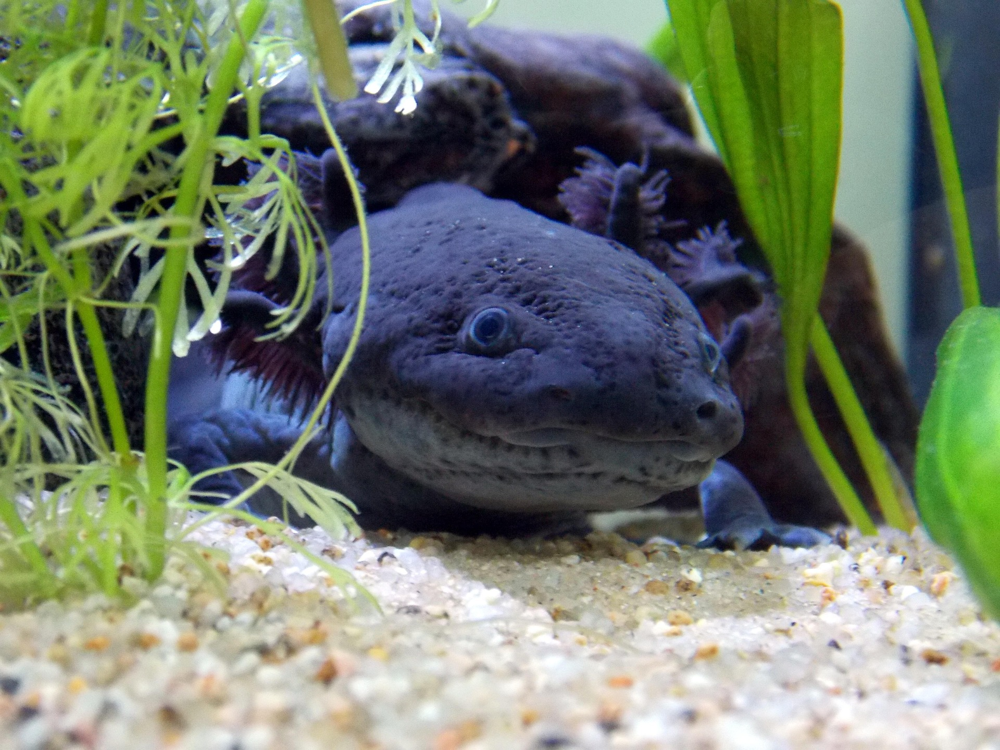

O Axolote é um tipo único de salamandra que mantém suas características larvais aquáticas durante toda a vida, como as brânquias externas, em vez de passar por metamorfose como a maioria dos anfíbios.
Via WikipediaO axolote é considerado uma espécie ilegal para compra, venda e posse no Brasil, pois se trata de um animal exótico, ameaçado de extinção no México
Imagem por LaDameBucolique de Pixabay
Imagem por LaDameBucolique de Pixabay
Como disse Julio Cortázar : "Os olhos dos axolotes me falavam da presença de uma vida diferente, de outra maneira de olhar."
Para mais informações sobre Axolotes, visite o site do Mundo Educação sobre Axolotes.
Nome: Axolotes
Idade: 2 anos
Cor: Branco e Cinza
Texto acima da linha horizontal.
Texto abaixo da linha horizontal.
Esta é a primeira linha.
E esta é a segunda linha.